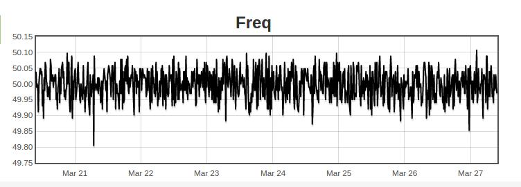
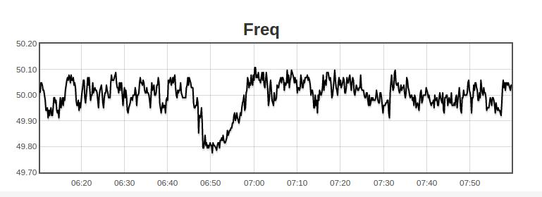
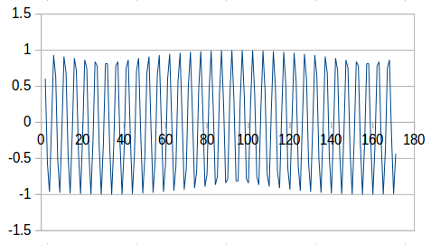
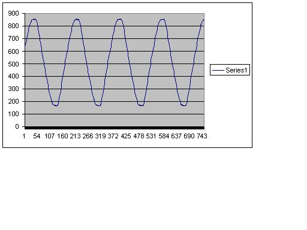
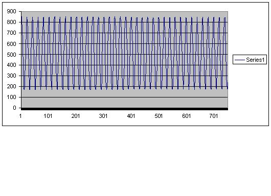
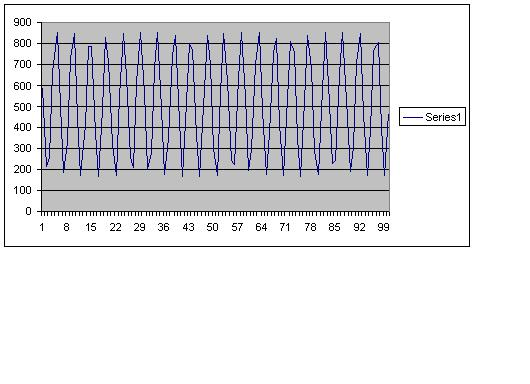

why is the output from the current sensor (Yhdc Current Transformer: SCT-013-000) modulated sine wave ?
as bellow : this is just pure analog readings from the arduino after implementing the 2.5V offset 
and here is the zoomed version:

isn't it supposed to be a pure sine wave as ?

I want to implement another project using the same methodology so I want to make sure that what I am doing is correct.thanks
Re: why does the output from the current signal have a modulated sinewave
What are the units on the timebase? It looks like you've got two sine waves there, one about 25x the frequency of the other. If I assume the one with the big swings is at 50Hz, then you've got some ~2Hz signal superimposed on that, with a peak-to-peak of about 20 units. What does your multimeter read when set to AC, while measuring the 2.5V offset rail? What component values have you used to build your 2.5V offset rail?
There's a thread on noise that might be helpful here: http://openenergymonitor.org/emon/node/10111
Re: why does the output from the current signal have a modulated sinewave
my sampling frequency was 5000 samples per second
actually here is the FFT
the fundemental frequency is 50 Hz and then there is some other frequency components at 100 Hz and 150 Hz
(the x axis is the frequency in Hz)
does that explain ?
I am using 470 Khz and 10 uF
it reads 0 volt
Re: why does the output from the current signal have a modulated sinewave
You can get this sort of 'beat' effect if your sampling frequency is not an exact multiple of the measured frequency. The Arduino free running ADC sampling interval is 104us. This means that the sampling point will slowly move on the sampled 50Hz sine wave.
But the effect (+/- 10 digits) is quite big and I do not think this is the real reason....
Can you tell us more about your code? Are you using the ADC in free running mode?
BR, Jörg.
Re: why does the output from the current signal have a modulated sinewave
Actually, given the very low frequency of the secondary wave (2 Hz), you might be better setting the voltmeter to DC and see if stays steady. Do you have access to a scope? Like in that thread referenced above, if you can't seen any sign of the noise in the signal, try looking for it on Vcc or AREF.
Re: why does the output from the current signal have a modulated sinewave
You can get this sort of 'beat' effect if your sampling frequency is not an exact multiple of the measured frequency.
It's a nice theory though... and goes a long way to explaining the incredibly low frequency of the "noise". Pursuing how the code is using the ADC sounds like a good plan to me; far more likely to find a 2Hz component in there then you would on a scope.
Re: why does the output from the current signal have a modulated sinewave
hey @JBecker
guys, what 2 Hz frequency are you talking about ? I can't see 2 Hz component in the frequency analysis? there is only 100 Hz (2nd harmonic) and 150 Hz (3rd harmonic )
check the FFT picture in my comment above
my code is using free running mode ADC and a timer that allows you to take samples in pre specified intervals(you can choose the sampling frequency) and my sampling rate was 5000 which is a multiple of 50 , I don't think this is the problem
I use sdFat library, it has a good example on this, refer to:
https://github.com/greiman/SdFat
hey friend @dBC
voltmeter DC stays steady, . and I got back from office now and I don't have an access to scope but when I tested the signal, it was okay and it didn't have any significant noise
I believe that, the waveform looks so because it has this 100 Hz and 150 Hz components which are called the second the the third harmonics:
http://www.electronics-tutorials.ws/accircuits/harmonics.html
Re: why does the output from the current signal have a modulated sinewave
Higher harmonics cannot be responsible for a low frequency component, no way. Harmonics will change the shape of the basic frequency sine wave (so that it is no pure sine wave any more) but they will not 'produce' lower harmonics. Low harmonics can be a result of frequency 'mixing', in this case mixing of the measured signal and the sampling frequency.
.....and it is not only a theory:-) I have been doing this stuff since 20 years and this is what you always get if your sampling frequency does not 'fit' to the sampled signal (and this has nothing to do with the Nyquist frequency). I think this has already discussed in a thread about the necessity for (or advantages of) a PLL which will adjust the sampling frequency to the measured signal.
BR, Jörg.
Re: why does the output from the current signal have a modulated sinewave
could you explain to me how did you know that there is lower harmonics ? this 2 Hz as you say.
Sorry I am not super good at signal processing : )
and it would be interesting if you could provide me with a link for PLL
thanks
Re: why does the output from the current signal have a modulated sinewave
Good question as i did not do an FFT and your FFT does not show the 2Hz component. But I (or better dBC!) can actually 'see' this component in your pictures. If you 'add' a 2Hz sine (with ~20 units peak-to-peak) to a 50Hz sine (with ~140 units peak-to-peak) the picture will just look more or less like what you showed us.
PLL: please use PLL for searching in this forum and you will get a number of results.
Martin's sketch with PLL is discussed here: http://openenergymonitor.org/emon/node/1535
BR, Jörg.
Re: why does the output from the current signal have a modulated sinewave
Sabirmgd,
I have deleted 14 copies of a message that you posted in this thread. You waste everyone's time doing that, and it was only because you did not look at your browser window to see that your message had been held for moderation. It is not the Internet that is sh****. Please be patient in the future.
Re: why does the output from the current signal have a modulated sinewave
I am sorry for wasting your time, Robert.
I just had to write my LONG answer over and over again every time I find it not posted yet. I didn't notice that my message had been held for moderation.
yet my internet is sh****
my apologies.
Re: why does the output from the current signal have a modulated sinewave
and my sampling rate was 5000 which is a multiple of 50
Is your 50Hz coming from a signal generator, or from the grid? If from the grid, then remember you're chasing a moving target there... hence the PLL suggestion. Here's what my grid frequency looks like over the last week:

And here's a zoom-in on that dip on the morning of March 21st:

Re: why does the output from the current signal have a modulated sinewave
Sabirmgd, can you explain what you mean by "voltage readings from Arduino". Are these sampled values from the ADC (within the range 0 to 1023), or are you measuring an analogue signal with some other system?
Re: why does the output from the current signal have a modulated sinewave
Just looking at those numbers: "my sampling rate was 5000"
Are you printing to serial output to get the values out of the Arduino? If you are, and you are not storing them in an array first, then your sample rate is not 5000 per second. And that is for two reasons: first, the serial output is slow; second, it doesn't tie up with what you are seeing.
What you are seeing is a sampling artefact. Your sample rate is not an exact sub-multiple of the mains frequency, therefore the samples do not happen at exactly the same point on the wave each time. This is what I get when, using a spreadsheet, I plot y=sin(sampleNo / 5.04 × 2 × π)

Re: why does the output from the current signal have a modulated sinewave
Fully agreed, Robert! This is more or less what I said above. But as long as we are not given the complete code, it is not clear if this is the real reason.
Jörg.
Re: why does the output from the current signal have a modulated sinewave
@dBC, its not from a function generator its from an air conditioner which is a moving target. Most Probably I should consider PLL
hey @calypso_rae, "voltage readings from Arduino" means the sampled values from the ADC (within the range 0 to 1023). sorry the term was not accurate.
hey, @Robert Wall. our beloved admin : )
I totally got your point. its true the serial port is very slow I struggled because of its speed when I was trying to make a program in C#.net to plot the real time data.
but NO, I am storing them in a memory card first using this library which allows you to exactly set your sampling rate
https://github.com/greiman/SdFat
No serial port involved in the experiment
Re: why does the output from the current signal have a modulated sinewave
Look at my equation then compare my graph with Sabirmgd's. The relative frequencies are similar, the modulation amplitude is similar. Does that not tell us that the real sample rate is about 5 samples per cycle, not 100?
We need the real timing of the main loop to get any further, the complete sketch would be fine.
Re: why does the output from the current signal have a modulated sinewave
The same argument applies: writing a serial card is slow. I suggest you read the millisecond clock, run the loop (say) 10000 times and read the clock again, then you will know the real sample rate. I don't believe it is 100 samples per cycle simply because the maths of the "modulated" output does not fit the graph you published in your first post above.
Re: why does the output from the current signal have a modulated sinewave
here is the sketch
Re: why does the output from the current signal have a modulated sinewave
I don't have an Arduino, so I cannot run your code to test it. Does the code give any errors?
What sort of power supply are you using for your Arduino? Have you checked that the 5 V is clean & stable, with no ripple of any sort on it?
Re: why does the output from the current signal have a modulated sinewave
a q: what are you using?
for this test I used just the USB for the power . the code doesn't give any error
the 5 volt is stable ( when I measure it using digital millimeter) , it doesn't change. or that doesn't indicate ?
Re: why does the output from the current signal have a modulated sinewave
It was worth asking.
What do you see when you change the sample rate to a value that is not exactly (or supposedly so) a multiple of line frequency? Say 4985 samples/sec?
It would also be useful to expand the trace time-wise so that you can see individual samples. Do this where the "modulating" wave is at a positive peak and at a negative peak.
Re: why does the output from the current signal have a modulated sinewave
The graphically-displayed sample values in the initial post only appear to only change approx 15 times per mains cycle, so that would be a sample rate of around 750 samples/second. Maybe this is just an effect of display resolution, but I thought it worth pointing out.
Re: why does the output from the current signal have a modulated sinewave
Did you see my spreadsheet graph? You can't get the output that's in the top post unless you drop the sample rate to about 5 per cycle.
It's a matter of getting two samples to straddle the peak, they must be far enough apart for each to be at about 80% of the amplitude of the wave to get the "depth of modulation" we see.
cos-1(0.8) = 37°, that means they are 74° apart, or 4.86 samples per cycle.
Re: why does the output from the current signal have a modulated sinewave
Yes, I entirely agree with your deductions Robert. I was just pointing out that the displayed waveform appears to show distinct steps that could be attributed to a much slower sampling rate than the claimed rate of 5000 per second (or 100 samples per mains cycle at 50 Hz).
The bottom graph in the initial post is presented as for a "pure sine wave". However, the measurements in question are being taken via the ADC which generates a stream of samples, not a "pure" waveform.
Re: why does the output from the current signal have a modulated sinewave
before running another experiment with a sampling rate that is 4985 samples/sec , I want to confirm with you that the sampling rate is 5000 Hz, or 100 samples for each mean cycle.
we can see that obvious from the graph, for 500 samples, we get 5 complete cycles which is 100 samples for each main cycle.
I also attached the sampling file which is taking the reading from arduino.
Re: why does the output from the current signal have a modulated sinewave
Could it be that the waveform is 'real' for that sort of load? The waveform is not a pure sine, so it is not a purely resistive load (an air conditioner is for sure not purely resistive). And the wobbling might be due to some sort of speed or power regulation?
BR, Jörg.
Re: why does the output from the current signal have a modulated sinewave
Could it be that the waveform is 'real' for that sort of load?
this is the first think I should thought of ! that is true. here is the signal using the scope:
anyway thank you guys I really got a lot from the discussion.
Re: why does the output from the current signal have a modulated sinewave
Here are some results as collected using an emonTx V2. The AC voltage source is a standard chassis-type mains transformer. The sketch is a cut-down version of my RawSamplesTool. This version, voltageSamples.ino, simply collects and stores a specified number of voltage samples, then writes them to Serial.
When running at its maximum rate, there are approx 180 samples / mains cycle, so each sample takes 111 us. This sketch uses analogRead() which appears to be approx 7 us slower than when the ADC is controlled by low-level commands. Using most of the available RAM, just over 4 waveforms can be stored (750 samples' worth). When displayed on a spreadsheet, this max rate data looks like voltageSamples_maxRate.jpg

By adding a delay after each sample is taken, the sampling rate can be reduced. When the sampling rate is reduced to approx 1000 samples per second (only 20 samples per mains cycle), some fluctuations can be seen as in voltageSamples_1000perSec.jpg

By adding 4004 us of delay per sample, there are only 4.85 samples per mains cycle. This appears to show the kind of modulation as Robert has calculated. In voltageSamples_4pt85perMainsCycle.jpg, I've reduced the number of samples to 100

The modulation that is seen in these graphs is presumably just an artifact of the way that these sample values are displayed. If they were correctly interpreted as being samples of a 50 Hz waveform, then a true unmodulated 50Hz waveform would appear. Unfortunately, a standard graphical package does not include this filtering facility.
Re: why does the output from the current signal have a modulated sinewave
Calypso,
Oh that is great!
I think my problem (or actually its not a problem ) was the air conditioner that I was monitoring. It produces this kind of sinewaves ( the modulated one as in the first post)
With your post confirming that, I should be getting a pure sine wave if my signal source is really producing a sinewave.
Re: why does the output from the current signal have a modulated sinewave
My post was to show that a clean sine wave, when sampled slowly, can appear to be modulated when displayed using simple graphical means, just as Robert has calculated.
Have you tried monitoring and displaying your mains voltage, as I have done, rather than the current drawn by your air conditioner?
Re: why does the output from the current signal have a modulated sinewave
I got your point.
In fact no, my aim basically is to monitor the current from washing machines in a laundry shop. I was using the air conditioner just because its in the lab.
Re: why does the output from the current signal have a modulated sinewave
Try monitoring an electric convector heater, or a kettle. The current waveform's shape will be almost identical to the voltage waveform, which in turn should be close to sine wave. But as you can see from Robin's trace, in the UK we get "flat topping" where the peaks are flattened. That's NOT a problem with sampling or recording, my analogue oscilloscope shows exactly the same shape.
Re: why does the output from the current signal have a modulated sinewave
analogRead() which appears to be approx 7 us slower than when the ADC is controlled by low-level commands.
I suspect that's how long it takes to decide which pin to sample. It needs to map from Arduino-land pin numbering scheme to AVR-land port/pin numbering scheme.
Re: why does the output from the current signal have a modulated sinewave
Try monitoring an electric convector heater, or a kettle.
I will be monitoring a kettle to review next experiment.
I think the main advantage of using low level commands or interrupts is that, it provides you with "continues data logging" as in free running mode the flag will be (lets say true) to get a new analog reading whenever the previous reading is captured and stored ADCH and ADCL
Just mentioning the sampling and sampling frequency, what is the maximum sampling rate I can get using an arduino and a wifi or eithernet module? Or lets say emonTxV2 and RPi and emoncms( with wifi ) ? Does anyone have an experience?
I am thinking to move from this memory card to cloud base monitoring.
Re: why does the output from the current signal have a modulated sinewave
The fastest way to obtain samples from the ADC is to have it in free-running mode. The ADC is then running at its maximum rate and produces a sample every 104 us. The program needs to direct the ADC to the appropriate channel in advance so that the ADC sub-processor will know what to do next when the in-progress conversion has finished.
A slightly less fast approach is to initiate the next conversion from with an ISR which springs into life whenever a conversion has finished.
The easiest approach is for the main program to wait until the conversion has been completed. The program then does something with the resulting value and in due course initiates the next conversion. This is how analogRead() works.
With either of the first two schemes, the main program in loop() can continue to do things while each ADC conversion is in progress. These interrupt-based schemes therefore have the capability of being significantly faster than the analogRead() approach.
Having said which, analogRead() does a perfectly good job for most applications. For continuous monitoring of several ADC channels, it makes sense to use an interrupt-based sampling scheme so that the sampling rate can be higher. When the ADC is in free running mode, it can service all six analog ports 32 times within each 50 Hz mains cycle.
The rate at which datalogging via RF takes place is not related to the ADC sampling rate. It can be as fast as you wish. Most monitoring programs transmit datalog data every few seconds, typically every 5 or 10 seconds. If the program goes to sleep between transmissions, or attends to each channel in turn so there are breaks in service, it is termed "discrete" monitoring. If all channels are monitored at all times, it is termed "continuous monitoring".
Sorry if this is off topic.